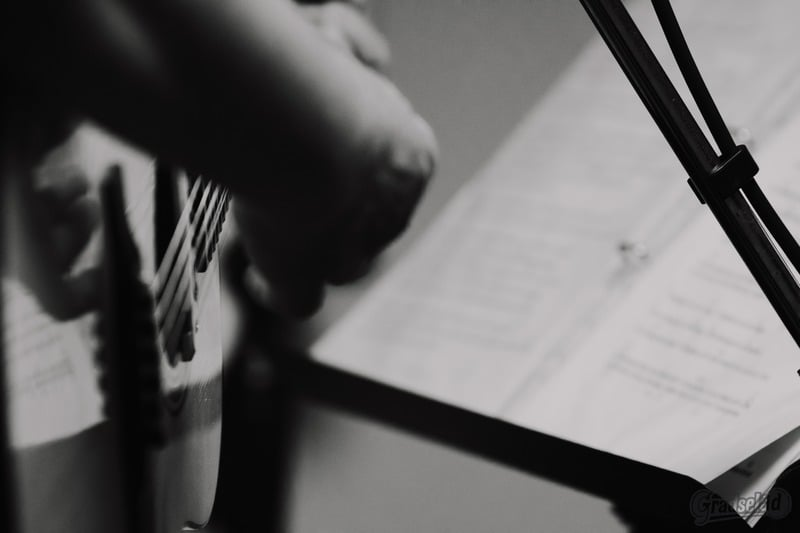
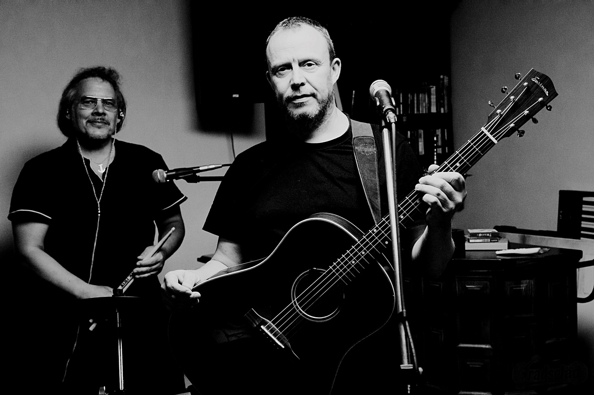
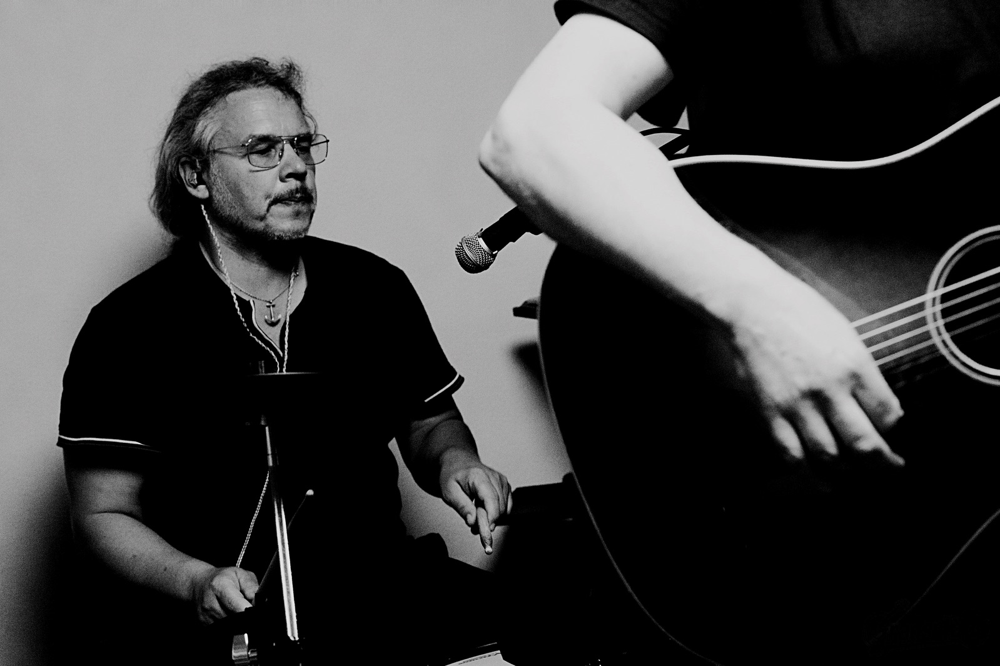
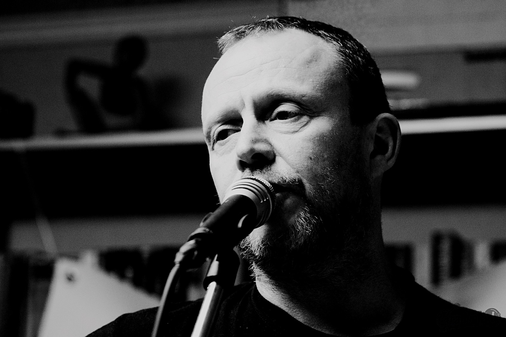

SONG-DEMO 01DAHEIMWie könnte ein Lied über das Gefühl klingen, irgendwo dazuzugehören?
Beispielthema · keine Audioaufnahme hinterlegt
Zwei Kerle.
Zwei Gitarren.
Eigene Geschichten.
Musik mit pfälzischen Wurzeln, ehrlichen Texten und Geschichten aus dem Leben. Von hier. Für alle, die zuhören mögen.
Claim & Beschreibung als VorschlagWarum immer nur die Lieder anderer spielen?
Wir sind Karsten und Werner. Zwei Musiker aus der Pfalz. Bekannte Lieder haben uns begleitet. Jetzt möchten wir mehr von unseren eigenen Geschichten erzählen.
Die Mundart darf bleiben. Und die Tür steht offen – auch wenn du nicht aus der Pfalz kommst.
Textvorschlag zur gemeinsamen Abstimmung
Erst kennenlernen. Dann wiedererkennen.
Und vielleicht beim nächsten Mal mitsingen.

SONG-DEMO 01DAHEIMWie könnte ein Lied über das Gefühl klingen, irgendwo dazuzugehören?
Beispielthema · keine Audioaufnahme hinterlegt
SONG-DEMO 02NOCH E BISSLEin möglicher Song für die Abende, die ruhig etwas länger dauern dürfen.
Beispielthema · keine Audioaufnahme hinterlegtEine Idee über kleine Momente und das Leben, das einfach passiert.
Beispielthema · keine Audioaufnahme hinterlegtDie drei Titel, Themen und Cover-Zuordnungen sind illustrative Platzhalter. Hier sollen später echte Gradseläd-Songs zu hören sein.
Zwei Musiker. Ein gemeinsamer Moment.
Am besten hört man uns mittendrin.
Dein Wohnzimmer. Ein paar Freunde. Gradseläd mittendrin. Eigene Songs, nah dran – ohne große Bühne.
Ein möglicher Abend für etwa 40 Gäste. Zum Zuhören, Kennenlernen und ehrlichen Austauschen: Was bleibt im Ohr? Was berührt? Was kann besser werden?
Über die Idee sprechenArbeitstitel & Format als Vorschlag, kein fertiges AngebotHier findet ihr künftig die nächsten Auftritte.
Vielleicht sehen wir uns vor der Bühne.
Aktuell liegen uns keine bestätigten zukünftigen Termine vor.
Veranstaltungsort · Ort · Uhrzeit noch offen
Die auf der bisherigen Website genannten Auftritte aus 2025 werden nicht als kommende Termine übernommen.
Ein Song braucht manchmal ein zweites Mal.
Hier wäre Platz für neue Musik, kleine Einblicke und die nächsten Abende mit uns.
Ob Weinfest, Stadtfest, Kulturabend oder private Feier: Erzählt uns, was ihr vorhabt. Über die Wohnzimmerkonzert-Idee reden wir auch gern.
Öffentliche Kontaktdaten der bestehenden Website · E-Mail öffnet dein Mailprogramm.